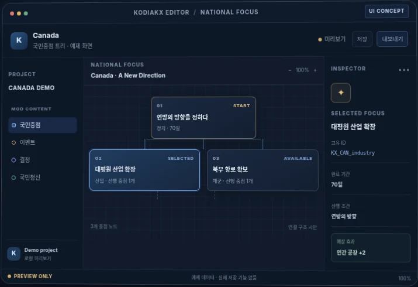

본문으로 건너뛰기
Project archive
프로젝트
반복되는 작업에서 발견한 불편을 웹앱과 브라우저 도구로 풀어냈습니다. 프로젝트마다 해결하고자 한 문제와 설계한 화면을 소개합니다.
 공개 웹앱 화면 · 예시 이미지
공개 웹앱 화면 · 예시 이미지
웹 애플리케이션
BEARSTORY
이미지에 대사를 더하고, 페이지를 엮어 이야기를 완성하는 웹 편집기.
웹앱 보기 ↗
- 편집
- 저장소
- 시청관
작업 흐름 요약
브라우저 확장
BEARSTORY EXT
창작, 보관, 감상을 브라우저 안에서 이어가는 로컬 작업실.
- 견적 확인
- 요청 추적
- 결과 보관
작업 흐름 요약
영상 생성 도구
ANIMA VideoAPI
생성 전 견적을 확인하고, 요청한 영상의 상태와 결과를 한곳에서 관리합니다.
- 대화
- 장면 분석
- 이미지
작업 흐름 요약
브라우저 확장
Scene Bridge Anima Lite
대화에 담긴 장면을 골라 이미지 생성 요청으로 연결합니다.
- 이미지
- 영상
- 스토리
작업 흐름 요약
통합 확장
bEAR-STORY+EXT
이미지·영상 생성과 스토리 편집을 같은 작업실에서 오갈 수 있게 구성한 통합 빌드.

국민중점 트리 · 공개 UI 시연
웹 UI 프로토타입
HOI4 Modding Studio
국민중점·이벤트·결정 등 전략 게임 모딩 구조를 시각적으로 계획하는 편집기 시연.
공개 프로토타입 보기 ↗
웹 애플리케이션
BEARSTORY
CG집과 4컷 만화를 만들 때 이미지 편집과 페이지 편집을 여러 도구에서 오가는 불편을 줄이고 싶었습니다. 작업 유형마다 편집기를 분리하고 앱 홈에서 필요한 도구를 바로 찾도록 구성했습니다.
- 담당 역할
- 편집 메뉴 구성 · 작업 흐름 설계 · 화면 구현
- 사용 기술
- HTML · CSS · JavaScript · IndexedDB · Google Drive
주요 기능
- CG집·4컷 만화·웹툰·웹소설 편집
- 말풍선·텍스트·페이지 순서 배치
- PDF·CBZ·ZIP 내보내기 및 브라우저·PC 폴더·Google Drive 보관
웹앱 보기 ↗
브라우저 확장
BEARSTORY EXT
만든 작품을 저장하고 다시 읽기 위해 여러 폴더와 뷰어를 오가는 과정을 줄였습니다. 편집 공간과 저장소, 시청관을 분리하고 PC 폴더에 보관한 작업도 탐색할 수 있도록 구성했습니다.
- 담당 역할
- 편집·저장소·시청관 메뉴 설계 · 로컬 작업 흐름 구성
- 사용 기술
- Chrome·Edge 확장 · JavaScript · IndexedDB · File System Access API
주요 기능
- CG집·4컷·웹툰·웹소설 편집
- 브라우저 및 PC 폴더에서 작업물 관리
- PDF·CBZ·이미지 폴더 시청관
영상 생성 도구
ANIMA VideoAPI
영상 생성 요청 전에 실제 비용을 확인하고, 요청 후에는 API가 반환하는 상태를 읽을 수 있도록 했습니다. 입력과 미리보기, 비용·작업 상태를 나란히 배치했습니다.
- 담당 역할
- 작업실 화면 · 견적 확인 · 대기열 상태 표시 설계
- 사용 기술
- 브라우저 확장 · JavaScript · 영상 생성 API
주요 기능
- 모델 선택 및 시작·끝 프레임 설정
- 실제 견적과 사용 내역 확인
- 요청 상태 및 결과 보관함
브라우저 확장
Scene Bridge Anima Lite
대화에서 본 장면을 이미지로 만들 때 프롬프트를 따로 작성하고 결과를 대화에 다시 연결하는 단계를 줄였습니다. 요청의 출발점인 메시지와 해당 결과를 함께 탐색할 수 있게 구성했습니다.
- 담당 역할
- 메시지별 생성 흐름 및 결과 탐색 화면 구성
- 사용 기술
- Chrome·Edge 확장 · Grok · SwarmUI · JavaScript
주요 기능
- 대화 장면 분석과 프롬프트 검토
- 로컬 SwarmUI 이미지 생성
- 메시지별 결과와 채팅별 갤러리
통합 확장
bEAR-STORY+EXT
별도로 만든 영상 생성 도구와 BEARSTORY 로컬 편집기를 ANIMA Bridge 작업실에서 열도록 통합했습니다. 작업실 사이드바와 편집기의 내부 메뉴를 구분해 각 도구의 탐색 방식을 살렸습니다.
- 담당 역할
- 통합 사이드바 · 내부 메뉴 구조 · 설치 흐름 구성
- 사용 기술
- Chrome·Edge 확장 · Node.js · PowerShell
주요 기능
- ANIMA 작업실에서 영상·편집기 열기
- 편집·저장소·시청관 내부 탭
- Windows 설치 및 업데이트 빌더
웹 UI 프로토타입
HOI4 Modding Studio
텍스트 위주인 모드 설정을 화면에서 탐색하고 관계를 계획하는 편집기를 구상했습니다. 공개 화면은 UI 시연 단계이며 프로젝트 저장과 실제 게임 파일 출력은 개발 중입니다.
- 담당 역할
- 데이터 구조 탐색 · 편집 UI 구성
- 사용 기술
- HTML · CSS · JavaScript
주요 기능
- 국민중점·이벤트·결정 탐색
- 브라우저 기반 편집 화면 시연
공개 프로토타입 보기 ↗